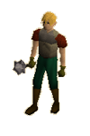

")
Draynor Manor and Village
Introduction | Location | Points of Interest | Personalities
Quests | Around The Haunted Manor | Miscellaneous
Quests | Around The Haunted Manor | Miscellaneous
Introduction

The manor's haunted rooms are filled with ghosts and creaking floorboards. Chairs come to life and follow adventurers about the house; trees and vines lash out at people as they walk past; there are hidden passages behind bookshelves; a possibly mad scientist conducts his experiments on the top floor.
Location

Immediately west of Draynor Village is Port Sarim, home of pirates and sailors, while east lies the peaceful town of Lumbridge.
Travelling north from Draynor Manor are the Barbarian Village and Edgeville, a popular gathering point for forays into the Wilderness.
If you are in search of some of the most famous mages in RuneScape, walking a short way south from Draynor Village will lead you to the long bridge across the sea to the Wizards' Tower.
Points of Interest

Diango, the legendary toyseller himself, offers what may be the most desirable merchandise in the whole of RuneScape: horses and dragon plates. The wise adventurer knows to look to Diango for visions of what the gods intend for their world (or, perhaps, to understand the gods' sense of humour). Joining him in the market is a Town Crier, who is more than happy to explain the Rules of Conduct and the role of Player Moderators.
There is also the wine merchant Fortunato whose nose for a good drop is almost beyond compare. Ned, an old sailor who has retired to the village, makes rope and other similar items in his house on the east side of the town. Aggie the Witch, who lives north of the market, has retired from the usual tricks of the witching trade, like turning people into toads, and now mostly makes dyes in a variety of colours.
To the east of the town, quite heavily guarded, is a jail looked over by a watch tower. Lady Keli, the jail's owner, specialises in less than legal imprisonments, so her cells are occasionally occupied by the nobility, whose families she intends to ransom them back to.
Personalities

Diango is something of a legend in RuneScape, as his salesmanship is only surpassed by how excited adventurers become when they hear about his wares. Unlike Ali Morrisane, he need not sell his merchandise across the world: those who want it will, inevitably, come to him.
|

The Wise Old Man was once a great hero of RuneScape, and there are few creatures that he has not slain. In his old age, though, he finds less satisfaction in his fame, and has taken a keen interest in wealth and extremely rare items.
|
|
| Diango, and his jaunty feathered hat, are always in the Draynor Village Market. | The Wise Old Man can be found in his house opposite the recently burgled bank. |

Miss Schism is a lady with the community of Draynor Village foremost in her mind. It is with the purest intentions that she gossips so freely. What other towns can boast such a goodly-natured woman?
|

Morgan is exactly what you might expect of a villager afraid of the vampire in Draynor Manor: he'd like to do something about it, but he is too terrified of the evil Count Draynor to do anything about it himself.
|
|
| Miss Schism sits outside the Wise Old Man's house, keeping a dutiful watch on him through his window. | Morgan can be found in his house, west of the wheat field. |

This particularly malicious vampire has held sway over Draynor Village for quite some time. Though Count Draynor has never actually been seen wandering outside his crypt, the number of young maidens snatched from their homes in the village is a testament to his lust for blood. |

Veronica is engaged to Ernest, which may be quite foolish given Ernest's desire to help Professor Oddenstein with his experiments. She is a dedicated girl, though, and isn't likely to let the Professor's mishaps get in the way of her wedding.
|
|
| Veronica stands about at the gates to Draynor Manor. |

Ernest is a well-meaning chap, but not very bright. Despite the fact that he should know better, he is eager to help Professor Oddenstein, and this is very probably why he is a chicken. Poor, silly Ernest.
|

The Professor is a strange man, and his latest experiments with his Pouletmorph Machine have had some unfortunate side effects. He has been successful with another experiment, though, and has opened a portal into a dimension filled with strange electrical creatures.
|
|
| Ernest can be found pecking at anything small in Professor Oddenstein's laboratory on the top floor of Draynor Manor. | Professor Oddenstein is usually tinkering with his machines in his laboratory on the top floor of Draynor Manor. |

Members will recognise that Martin is an extremely experienced gardener, and dedicated to growing the finest vegetables and raising the most succulent pigs. He has banded together with other passionate farmers to form the Groups of Advanced Gardeners (GAG) in order to pool their talents.
|

Professor Oddenstein occasionally 'wears out' his assistants, and when Ernest's problems are sorted out, he's due for a new one. Ava is a remarkably intelligent assistant, and will likely create greater wonders than Oddenstein once she earns a lab of her own.
|
|
| Martin can be found in the Draynor Village Market. | Ava can be found in her bedroom in Draynor Manor after Ernest has been returned to normal. |

Spy work can be a risky business, especially in the desert kingdoms, so it must be some relief to Leela that she's been posted to the relatively calm village. Sure, there are some weird locals, and it's a bit colder than she'd like, but with the Emir's son being in trouble, she couldn't possibly leave her post.
|
| Leela paces about north of Lady Keli's jail. |
Quests
The following quests can be started in Draynor:
- Vampire Slayer
- Ernest the Chicken
- A Fairy Tale, Part One - Growing Pains (Members)
- A Fairy Tale, Part Two - Cure a Queen (Members)
- Animal Magnetism (Members)
- Missing My Mummy (Members)
Around the Haunted Manor and the Less Haunted Town

Goblins are one of the most widely spread races of RuneScape, such that if they were ever properly organised they might threaten larger towns. It is a good thing, then, that they are a poorly organised race and prone to bickering.
|

The dark wizards that lurk just southwest of the village are an odd sight, even in Draynor. They are not terribly dangerous, being new to the order, but they have slightly better Defence against Magic than other forms of attack.
|
|
| Most of the local goblins can be found east of Draynor Village. | The dark wizards can be found south-west of Draynor Village. |

Ghosts might be an eerie sight anywhere else, but within Draynor Manor, where the chairs follow you about the house and every floorboard creaks menacingly, ghosts are to be expected. They can be dangerous, but magic is quite effective against enemies that have no bodies.
|

The Draynor Village Market is often full to capacity, and combined with the recent bank robbery, the town has thought it wise to employ market guards. They will not attack anyone who abides by the law, but if your fingers happen to stray into someone else's pockets, they will be forced to attack.
|
|
| Ghosts can be most widely found on the first floor of Draynor Manor. | Quite unsurprisingly, the market guards can be found in Draynor Village Market. |
 Skeletons may look harmless and weak, but their lack of muscle is more than made up for by the potent magic that holds them together. If you are a new adventurer, it might be best to avoid the skeleton in the closet at Draynor Manor. If you must deal with it, however, the skeleton's bones will give way under a barrage of crushing attacks.
|

Unlike Aggie, who has moved to town, witches are not generally friendly types and are more than likely to use their foul magic to try to kill careless adventurers. They also make potions, normally used to poison food.
|
|
| The skeleton can be found in the closet on the ground floor of Draynor Manor. | The witch can be found in the north-west room of the ground floor of Draynor Manor. |
|

Note: Jail guards are aggressive, so if you wander past, and they think they can kill you, they will attack.
The guards employed by Lady Keli are quite dedicated, certain that, though their work may be dull, the payment more than makes up for it. They are also quite well trained, and obey Lady Keli's word without question. Their armour isn't fantastic, and, like all melee fighters, they are weak against Magic. |

Black Knights are not usually found away from their fortress or Taverley Dungeon, but a solitary Black Knight wanders the woods south of Draynor Village. Like the dark wizards north of him, the reason for his presence is unclear.
|
|
| The jail guards never stray far from Lady Keli's jail. | The Black Knight can be found south of Draynor Village. |
Miscellaneous
- Aggie's house features two spawn points; one for cheese, and another for tomato.
- The rat-infested shack next to Morgan's house has two log spawn points.
- If you have a pet fish, you can feed it with the fish food on the first floor of Draynor Manor.
- If you creep around behind Count Draynor's coffin, you will find a bronze medium helm spawn point.
- Once members have completed Ernest the Chicken, the entrance to the Killerwatt Plane will open in Professor Oddenstein's laboratory.
- In an effort to protect itself, the bank has hired two guards. While one of them stands by the doors, the other has hidden himself nearby. Leaf him alone, he's not in the mood for chatting!

More articles in
Cities and Towns
|
|